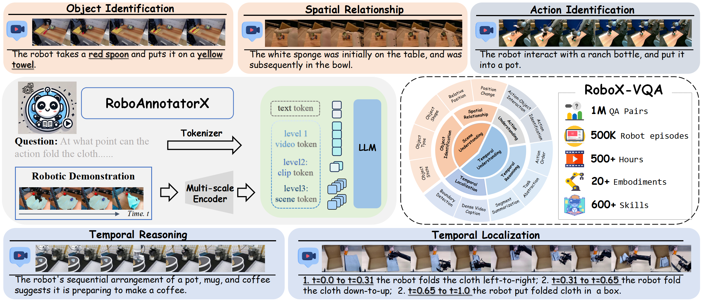
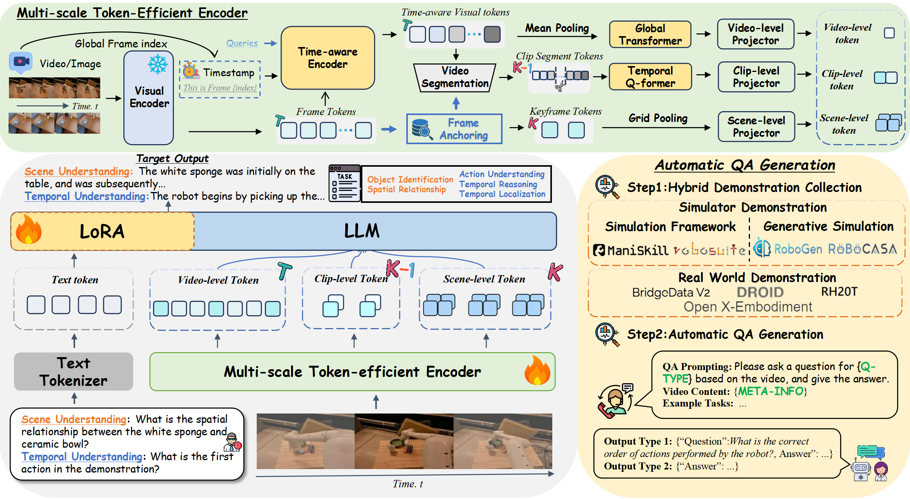
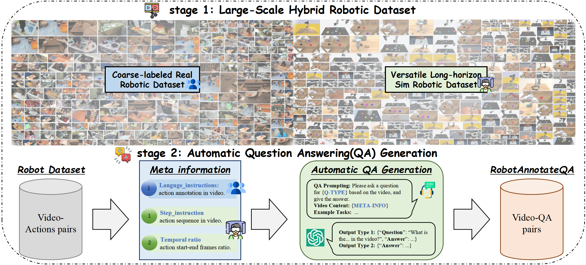

Recent advances in robotics have produced numerous valuable large-scale demonstration datasets, yet their potential remains underutilized due to annotation limitations. Current datasets often suffer from sparse temporal annotations, and inconsistent labeling granularity, particularly for complex long-horizon demonstrations. Traditional manual annotation methods are expensive and poorly scalable while existing automated methods struggle with temporal coherence and semantic richness across extended demonstrations. For this, we propose RoboAnnotatorX, a reliable annotation tool that enhances multimodal large language model to generate high-quality, context-rich annotations for complex long-horizon demonstrations. Specifically, we introduce a multi-scale token-efficient encoder to maintain computational efficiency while simultaneously capturing fine-grained visual details and preserving temporal information by jointly integrating scene-level anchoring, clip-level temporal dynamics, and video-level global modeling. We further construct a comprehensive dataset RoboX-VQA that synthesizes diverse QA pairs from both real-world and simulated data, bridging the significant domain gap in robotics demonstrations. Moreover, we leverage a curriculum-inspired three-stage training to progressively develop capabilities from basic visual perception to sophisticated temporal reasoning. Extensive experiments demonstrate that RoboAnnotatorX significantly outperforms existing approaches in annotation quality and exhibits strong generalization across diverse robotic environments, helping unlock the full potential of existing robotic datasets.

Overview framework of RoboAnnotatorX.
Specifically, we introduce a multi-scale token-efficient encoder that efficiently processes long-horizon videos
(with total length T) through scene-level anchoring (with K anchoring keyframes), clip-level temporal dynamics,
and video-level global modeling. Moreover, to bridge the domain gap between general vision-language understanding and robotics, we
construct a comprehensive instruction fine-tuning dataset RoboX-VQA across multi-granularity robotics annotation with hybrid demonstration collection
and automatic QA generation.

Overview framework of automatic RoboX-VQA generation.
Our framework leverages dual-source meta-information to
generate comprehensive question-answer pairs. These meta-information sources are fed into GPT-4o, which, guided by carefully designed
prompts, generates diverse and semantically meaningful QA pairs. This automated process creates structured learning signals that enhance
models' visual understanding and reasoning capabilities across multiple dimensions.
In this work, we present RoboAnnotatorX, an advanced automated annotation framework that leverages MLLM to generate high-quality, context-rich annotations for complex long-horizon robotic demonstrations, where X signifies its comprehensive annotation capabilities and universal applicability across diverse datasets. Through our proposed multi-scale token-efficient encoder with its unique three-stream architecture, our model achieves superior annotation quality by balancing fine-grained visual understanding with efficient temporal reasoning. Moreover, to bridge the critical gap between general vision-language understanding and specialized robotics comprehension, we introduce RoboX-VQA, a extensive dataset comprising 1M QA pairs and 500K robot episodes cross 20 embodiments and 600 skills, establishing the first comprehensive benchmark for long- horizon robot video understanding. With coverage spanning fine-grained scene understanding and temporal reasoning, combined with a curriculum-inspired training paradigm, RoboAnnotatorX demonstrates robust generalization across diverse robotic platforms and environments. We envision RoboAnnotatorX as a reliable annotation tool to unleash the full potential of robotic demonstrations, while RoboX-VQA can also provide convenient resources as both a large- scale dataset with fine-grained annotations and comprehen-sive benchmark to facilitate future robotics research.